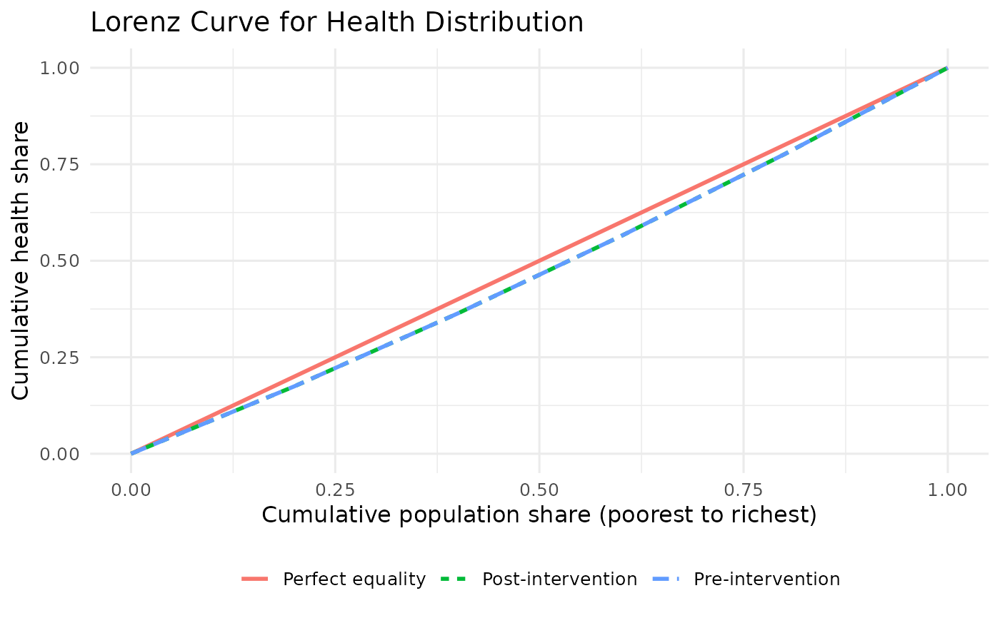

Plots the Lorenz curve showing health concentration across the
socioeconomic distribution. The 45-degree line represents perfect equality.
Usage
plot_lorenz_curve(dcea_result, show_pre_post = TRUE, show_generalised = FALSE)
Arguments
- dcea_result
DCEA result object, or a data frame with health and
weight columns.
- show_pre_post
Logical. Overlay pre- and post-intervention curves
(default: TRUE).
- show_generalised
Logical. Overlay the Generalised Lorenz Curve
(default: FALSE).
Examples
result <- run_aggregate_dcea(
icer = 25000, inc_qaly = 0.5, inc_cost = 12500,
population_size = 10000, wtp = 20000
)
plot_lorenz_curve(result)
